화공기사(구) (2021-08-14 기출문제)
1과목: 화공열역학
1. 닫힌계에서 엔탈피에 대한 설명 중 잘못된 것은? (단, H는 엔탈피, U는 내부에너지, P는 압력, T는 온도, V는 부피이다.)
- H = U + PV로 정의된다.
- 경로에 무관한 특성치이다.
- 정적과정에서는 엔탈피의 변화로 열량을 나타낸다.
- 압력이 일정할 땐, dH=CpdT로 표현된다.
(정답률: 70%)

2. 27°C, 1atm의 질소 14g을 일정 체적에서 압력이 2배가 되도록 가역적으로 가열하였을 때 엔트로피 변화(△S; cal/K)는? (단, 질소를 이상기체라 가정하고 Cp는 7cal/mol·K이다.)
- 1.74
- 3.48
- -1.74
- -3.48
(정답률: 33%)
3. 100atm, 40°C의 기체가 조름공정으로 1atm까지 급격하게 팽창하였을 때, 이 기체의 온도(K)는? (단, Joule-Thomson coefficient(μ; K/atm)는 다음 식으로 표시된다고 한다.)
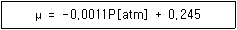
- 426
- 331
- 294
- 250
(정답률: 35%)
4. 압축 또는 팽창에 대해 가장 올바르게 표현한 내용은? (단, 하첨자 S는 등엔트로피를 의미한다.)
- 압축기의 효율은
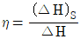
로 나타낸다. - 노즐에서 에너지수지식은 WS=-△H이다.
- 터빈에서 에너지수지식은
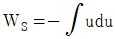
이다. - 조름공정에서 에너지수지식은 dH=-udu 이다.
(정답률: 35%)
5. 엔트로피에 관한 설명 중 틀린 것은?
- 엔트로피는 혼돈도(randomness)를 나타내는 함수이다.
- 융점에서 고체가 액화될 때의 엔트로피 변화는
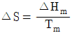
로 표시할 수 있다. - T = 0K에서의 엔트로피는 1이다.
- 엔트로피 감소는 질서도(orderliness)의 증가를 의미한다.
(정답률: 65%)
6. 과잉깁스에너지 모델 중에서 국부조성 (local composition) 개념에 기초한 모델이 아닌 것은?
- 윌슨(Wilson) 모델
- 반라르(van Laar) 모델
- NRTL(Non-Randm-Two-Liquid) 모델
- UNIQUAC(UNIversal QUAsi-Chemical) 모델
(정답률: 44%)
7. 두 절대온도 T1, T2(T1＜T2)사이에서 운전하는 엔진의 효율에 관한 설명 중 틀린 것은?
- 가역과정인 경우 열효율이 최대가 된다.
- 가역과정인 경우 열효율은 (T2-T1)/T2 이다.
- 비가역 과정인 경우 열효율은 (T2-T1)/T2 보다 크다.
- T1이 0K인 경우 열효율은 100%가 된다.
(정답률: 65%)
8. 평형상수에 대한 편도함수가
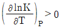
로 표시되는 화학반응에 대한 설명으로 옳은 것은?- 흡열반응이며, 온도 상승에 따라 K값은 커진다.
- 발열반응이며, 온도 상승에 따라 K값은 커진다.
- 흡열반응이며, 온도 상승에 따라 K값은 작아진다.
- 발열반응이며, 온도 상승에 따라 K값은 작아진다.
(정답률: 59%)
9. 과잉깁스에너지(GE)가 아래와 같이 표시된다면 활동도계수(γ)에 대한 표현으로 옳은 것은? (단, R은 이상기체상수, T는 온도. B, C는 상수, χ는 액상 몰분율, 하첨자는 성분 1과 2에 대한 값임을 의미한다.)
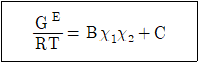
- lnγ1 = Bχ12
- lnγ1 = Bχ22
- lnγ1 = Bχ12 + C
- lnγ1 = Bχ22 + C
(정답률: 46%)
10. 세기성질(intensive property)이 아닌 것은?
- 일(work)
- 비용적(specific volume)
- 몰 열용량(molar heat capacity)
- 몰 내부 에너지 (molar internal energy)
(정답률: 59%)
11. 액체로부터 증기로 바뀌는 정압 경로를 밟는 순수한 물질에 대한 깁스 자유에너지(G)와 절대온도(T)의 그래프를 옳게 표시된 것은?
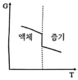
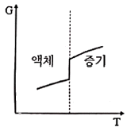
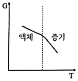
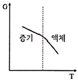
(정답률: 49%)
12. 어떤 실제기체의 실제상태에서 가지는 열역학적 특성치와 이상상태에서 가지는 열역학적 특성치의 차이를 나타내는 용어는?
- 부분성질(Partial property)
- 과잉성질(excess property)
- 시강성질(intensive property)
- 잔류성질(residual property)
(정답률: 51%)
13. 240kPa에서 어떤 액체의 상태량이 Vr는 0.00177m3/kg, Vg는 0.1⑤m3/kg, Hr는 181kJ/kg, Hg는 496kJ/kg일 때, 이 압력에서의 Ufg(kJ/kg)는? (단, V는 비체적, U는 내부에너지, H는 엔탈피, 하첨자 f는 포화액, g는 건포화증기를 나타내고 Ufg는 Ug - Ur를 의미한다.)
- 24.8
- 290.2
- 315.0
- 339.8
(정답률: 44%)
14. 역 카르노사이클에 대한 그래프이다. 이 사이클의 성능계수를 표시한 것으로 옳은 것은? (단, T1에서 열이 방출되고 T2에서 열이 흡수된다.)
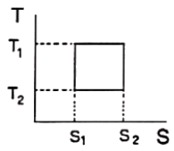
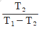
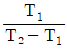
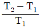
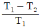
(정답률: 43%)
15. 액상반응의 평형상수(K)를 옳게 나타낸 것은? (단, P는 압력, vi는 성분 i의 양론 수(stoichiometric number), R은 이상기체상수, T는 온도, xi는 성분 i의 액상 몰분률, yi는 성분 i의 기상 몰분률,
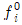
는 표준상태에서의 순수한 액체 i의 퓨개시티,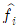
는 용액 중 성분 i의 퓨개시티이다.)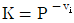
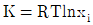
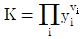
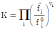
(정답률: 46%)
16. 실제기체가 이상기체상태에 가장 가까울 때의 압력, 온도 조건은?
- 고압저온
- 고압고온
- 저압저온
- 저압고온
(정답률: 59%)
17. 열역학적 성질에 대한 설명 중 옳지 않은 것은?
- 순수한 물질의 임계점보다 높은 온도와 압력에서는 한 개의 상을 이루게 된다.
- 동일한 이심인자를 갖는 모든 유체는 같은 온도, 같은 압력에서 거의 동일한 Z값을 가진다.
- 비리얼(Virial) 상태방정식의 순수한 물질에 대한 비리얼 계수는 온도만의 함수이다.
- 반데르발스(Van der Waals) 상태방정식은 기/액 평형상태에서 임계점을 제외하고 3개의 부피 해를 가진다.
(정답률: 33%)
18. 1atm, 90°C, 2성분계(벤젠-톨루엔) 기액평형에서 액상 벤젠의 조성은? (단, 벤젠, 톨루엔의 포화증기압은 각각 1.34, 0.53atm이다.)
- 1.34
- 0.58
- 0.53
- 0.42
(정답률: 49%)
19. 1540°F와 440°F 사이에서 작동하고 있는 카르노 사이클 열기관(Carnot cycle heat engine)의 효율은?
- 29%
- 35%
- 45%
- 55%
(정답률: 41%)
20. 이상기체와 관계가 없는 것은? (단, Z는 압축인자이다.)
- Z = 1이다.
- 내부에너지는 온도만의 함수이다.
- PV = RT가 성립한다.
- 엔탈피는 압력과 온도의 함수이다.
(정답률: 53%)
2과목: 단위조작 및 화학공업양론
21. 반데르발스(Van der Waals) 상태 방정식의 상수 a, b와 임계온도(Tc) 및 임계압력(Pc)와의 관계를 잘못 표현한 것은? (단, R은 기체상수이다.)
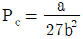
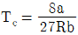
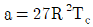
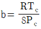
(정답률: 32%)
22. 동일한 압력에서 어떤 물질의 온도가 dew point보다 높은 상태를 나타내는 것은?
- 포화
- 과열
- 과냉각
- 임계
(정답률: 54%)
23. 20L/min의 물이 그림과 같은 원관에 흐를 때 ⓐ지점에서 요구되는 압력(kPa)은? (단, 마찰손실은 무시하며, D는 관의 내경, P는 압력, h는 높이를 의미한다.)
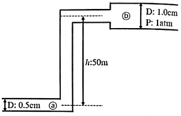
- 45
- 202
- 456
- 742
(정답률: 29%)
24. 20wt% 메탄올 수용액에 10wt% 메탄올 수용액을 섞어 17wt% 메탄올 수용액을 만들었다. 이 때 20wt% 메탄올 수용액에 대한 17wt% 메탄올 수용액의 질량비는?
- 1.43
- 2.72
- 3.85
- 4.86
(정답률: 38%)
25. 그림과 같은 공정에서 물질수지도를 작성하기 위해 측정해야 할 최소한의 변수는? (단, A, B, C는 성분을 나타내고 F와 P는 3성분계, W흐름은 2성분계이다.)
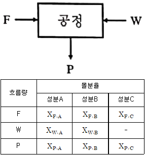
- 3
- 4
- 5
- 6
(정답률: 33%)
26. 몰 증발잠열을 구할 수 있는 방법 중 2가지 물질의 증기압을 동일 온도에서 비교하여 대수좌표에 나타낸 것은?
- Cox 선도
- Duhring 도표
- Othmer 도표
- Watson 도표
(정답률: 33%)
27. 석유제품에서 많이 사용되는 비중단위로 많은 석유제품이 10~70° 범위에 들도록 설계된 것은?
- Baume
- API
- Twaddell도
- 표준비중
(정답률: 52%)
28. 어떤 기체혼합물의 성분 분석 결과가 아래와 같을 때, 기체의 평균 분자량은?
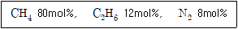
- 18.6
- 17.4
- 7.4
- 6.0
(정답률: 52%)
29. 표준대기압에서 압력게이지로 압력을 측정하였을 때 20psi였다면 절대압(psi)은?
- 14.7
- 34.7
- 55.7
- 65.7
(정답률: 54%)
30. Methyl acetate가 다음 반응식과 같이 고압촉매 반응에 의하여 합성될 때, 이 반응의 표준반응열(kcal/mol)은? (단, 표준연소열은 CO(g)가 -67.6kcal/mol, CH3COOCH3(g)는 -397.5 kcal/mol, CH3OCH3(g)는 -348.8 kcal/mol이다.)
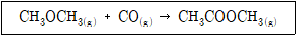
- 814
- 28.9
- -614
- -18.9
(정답률: 53%)
31. 분쇄에 대한 설명으로 틀린 것은?
- 최종 입자의 크기가 중요하다.
- 최초 입자의 크기는 무관하다.
- 파쇄물질의 종류도 분쇄동력의 계산에 관계된다.
- 파쇄기 소요일량은 분쇄되어 생성되는 표면적에 비례한다.
(정답률: 50%)
32. 벽의 두께가 100mm인 물질의 양 표면의 온도가 각각 t1=300°C, t2=30°C일 때, 이 벽을 통한 열손실(flux; kcal/m2·h)은? (단, 벽의 평균 열전도도는 0.02kcal/m·h·°C이다.)
- 29
- 54
- 81
- 108
(정답률: 52%)
33. 추제(solvent)의 성질 중 틀린 것은?
- 선택도가 클 것
- 회수가 용이할 것
- 화학결합력이 클 것
- 가격이 저렴할 것
(정답률: 57%)
34. 다음 무차원군 중 밀도와 관계없는 것은?
- 그라스호프(Grashof) 수
- 레이놀즈(Reynolds) 수
- 슈미트(Schmidt) 수
- 너셀(Nusselt) 수
(정답률: 49%)
35. 액체와 비교한 초임계유체의 성질로서 틀린 것은?
- 밀도가 크다.
- 점도가 낮다.
- 고압이 필요하다.
- 용질의 확산도가 높다.
(정답률: 41%)
36. 흡수용액으로부터 기체를 탈거(stripping) 하는 일반적인 방법에 대한 설명으로 틀린 것은?
- 좋은 조건을 위해 온도와 압력을 높여야 한다.
- 액체와 기체가 맞흐름을 갖는 탑에서 이루어진다.
- 탈거매체로는 수중기나 불활성기체를 이용할 수 있다.
- 용질의 제거율을 높이기 위해서는 여러 단을 사용한다.
(정답률: 36%)
37. 낮은 온도에서 증발이 가능해서 증기의 경제적 이용이 가능하고 과즙, 젤라틴 등과 같이 열에 민감한 물질을 처리하는데 주로 사용되는 것은?
- 다중효용 증발
- 고압 증발
- 진공 증발
- 압축 증발
(정답률: 49%)
38. 용액의 증기압 곡선을 나타낸 도표에 대한 설명으로 틀린 것은? (단, γ는 활동도계수이다.)
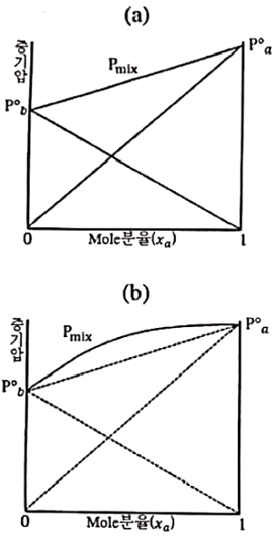
- (a)는 γa=γb=1 로서 휘발도는 정규상태이다.
- (b)는 γa＜1, γb＜1 로서 휘발도가 정규상태보다 비정상적으로 낮다.
- (a)는 벤젠-톨루엔계 및 메탄-에탄계와 같이 두 물질의 구조가 비슷하여 동종분자간 인력이 이종분자간 인력과 비슷할 경우에 나타난다.
- (b)는 물-에탄올계, 에탄올-벤젠계 및 아세톤-CS2계가 이에 속한다.
(정답률: 38%)
39. 유체가 난류(Re＞30000)로 흐르고 있는 오리피스 유량계에 사염화탄소(비중 1.6) 마노미터를 설치하여 50cm의 읽음값을 얻었다. 유체비중이 0.8일 때, 오리피스를 통과하는 유체의 유속은(m/s)? (단, 오리피스 계수는 0.61이다.)
- 1.91
- 4.25
- 12.1
- 15.2
(정답률: 25%)
40. 건조특성곡선 상 정속기간이 끝나는 점은?
- 수축(shrink) 함수율
- 자유(free) 함수율
- 임계(critical) 함수율
- 평형(equilibrium) 함수율
(정답률: 44%)
3과목: 공정제어
41. 현장에서 PI제어기를 시행착오를 통하여 결정하는 방법이 아래와 같다. 이 방법을 G(s)= 1/(s+1)3 인 공정에 적용하여 1단계 수행 결과 제어기 이득이 4일 때, 페루프가 불안정해지기 시작하는 적분상수는?
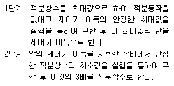
- 0.17
- 0.56
- 2
- 2.4
(정답률: 23%)
42. 비선형계에 해당하는 것은?
- 0차 반응이 일어나는 혼합 반응기
- 1차 반응이 일어나는 혼합 반응기
- 2차 반응이 일어나는 혼합 반응기
- 화학 반응이 일어나지 않는 혼합조
(정답률: 47%)
43. 사람이 차를 운전하는 경우 신호등을 보고 우회전하는 것을 공정 제어계와 비교해 볼 때 최종 조작변수에 해당된다고 볼 수 있는 것은?
- 사람의 손
- 사람의 눈
- 사람의 두뇌
- 사람의 가슴
(정답률: 51%)
44. 블록선도의 전달함수(
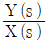
)는?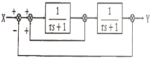
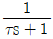
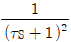
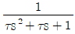
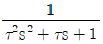
(정답률: 40%)
45. 전달함수가 (5s+1)/(2s+1) 인 장치에 크기가 2인 계단입력이 들어 왔을 때의 시간에 따른 응답은?
- 2-3e-t/2
- 2+3e-t/2
- 2+3e-2t
- 2-3e-2t
(정답률: 40%)
46. 1차 공정의 Nyquist 선도에 대한 설명으로 틀린 것은?
- Nyquist 선도는 반원을 형성한다.
- 출발점 좌표의 실수값은 공정의 정상상태이득과 같다.
- 주파수의 증가에 따라 시계 반대방향으로 진행한다.
- 원점에서 Nyquist선상의 각 점까지의 거리는 진폭비(Amplitude ratio)와 같다.
(정답률: 37%)
47.
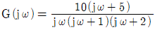
에서 ω가 아주 작을 때 즉, ω→0일 때의 위상각은?- -90°
- 0°
- +90°
- +180°
(정답률: 21%)
48. 시간 상수가 1min이고 이득(gain)이 1인 1차계의 단위응답이 최종치의 10%로부터 최종치의 90%에 도달할 때까지 걸린 시간(rise time; tr, min)은?
- 2.20
- 1.01
- 0.83
- 0.21
(정답률: 20%)
49. 아래의 제어계와 동일한 총괄전달함수를 갖는 블록선도는?
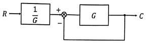
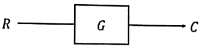
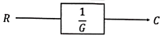
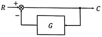
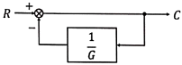
(정답률: 40%)
50. 전달함수
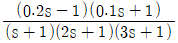
에 대해 잘못 설명한 것은?- 극점(pole)은 -1,-0.5, -1/3이다.
- 영점(zero)은 1/0.2, -1/0.1 이다.
- 전달함수는 안정하다.
- 전달함수의 역수 전달함수는 안정하다.
(정답률: 46%)
51. 물리적으로 실현 불가능한 계는? (단, x는 입력변수, y는 출력변수이고 θ＞0이다.)
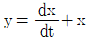
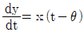
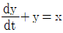
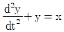
(정답률: 24%)
52. 2차계의 전달함수가 아래와 같을 때 시간상수(τ)와 제동계수(damping ratio; ζ)는?
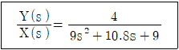
- τ=1, ζ=0.4
- τ=1, ζ=0.6
- τ=3, ζ=0.4
- τ=3, ζ=0.6
(정답률: 38%)
53. PID제어기의 작동식이 아래와 같을 때 다음 중 틀린 설명은?
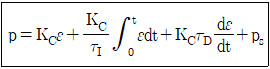
- ps값은 수동모드에서 자동모드로 변환되는 시점에서의 제어기 출력값이다.
- 적분동작에서 적분은 수동모드에서 자동모드로 변환될 때 시작된다.
- 적분동작에서 적분은 자동모드에서 수동모드로 전환될 때 중지된다.
- 오차 절대값이 증가하다 감소하면 적분동작 절대값도 증가하다 감소하게 된다.
(정답률: 29%)
54. 아래와 같은 제어계에서 블록선도에서 T' R(s)가 1/s일 때, 서보(servo) 문제의 정상상태 잔류편차(offset)는?
- 0.133
- 0.167
- 0.189
- 0.213
(정답률: 39%)
55. 의 계단응답 (Step Response)에 대해 옳게 설명한 것은?
- 계단입력을 적용하자 곧바로 출력이 초기치에서 움직이기 시작하여 1로 진동하면서 수렴한다.
- 계단입력을 적용하자 곧바로 출력이 초기치에서 움직이기 시작하여 진동하지 않으면서 발산한다.
- 계단입력에 대해 시간이 3만큼 지난 후 진동하지 않고 발산한다.
- 계단입력에 대해 진동하면서 발산한다.
(정답률: 39%)
56. 제어 결과로 항상 cycling이 나타나는 제어기는?
- 비례 제어기
- 비례-미분 제어기
- 비례-적분 제어기
- on-off 제어기
(정답률: 43%)
57. 임계진동 시 공정입력이 u(t)=sin(πt), 공정출력이 y(t)=-6sin(πt)인 어떤 PID제어계에 Ziegler-Nichols 튜닝룰을 적용할 때, 제어기의 비례이득(KC), 적분시간(τI), 미분시간(τD)은? (단, Ku와 Pu는 각각 최대이득과 최종주기를 의미하며, Ziegler-Nichols 튜닝룰에서 비례이득(KC)=0.6Ku, 적분시간(τI)=Pu/2, 미분시간(τD)=Pu/8이다.)
- KC=3.6, τI=1, τD=0.25
- KC=0.1, τI=1, τD=0.25
- KC=3.6, τI=π/2, τD=π/8
- KC=0.1, τI=π/2, τD=π/8
(정답률: 25%)
58. 과소감쇠진동공정(underdamped process)의 전달함수를 나타낸 것은?
(정답률: 39%)
59. 탑상에서 고순도 제품을 생산하는 증류탑의 탑상 흐름의 조성을 온도로부터 추론(inferential) 제어하고자 한다. 이때 맨위 단보다 몇 단 아래의 온도를 측정하는 경우가 있는데 그 이유로 가장 타당한 것은?
- 응축기의 영향으로 맨위 단에서는 다른 단에 비하여 응축이 많이 일어나기 때문에
- 제품의 조성에 변화가 일어나도 맨위 단의 온도 변화는 다른 단에 비하여 매우 작기 때문에
- 맨위 단은 다른 단에 비하여 공정 유체가 넘치거나(flooding) 방울져 떨어지기(weeping) 때문에
- 운전 조건의 변화 등에 의하여 맨위 단은 다른 단에 비하여 온도는 변동(fluctuation)이 심하기 때문에
(정답률: 34%)
60. Bode선도를 이용한 안정성 판별법 중 틀린 것은?
- 위상 크로스오버 주파수(Phase crossover frequency)에서 AR은 1보다 작아야 안정하다.
- 이득여유(Gain Margin)는 위상 크로스오버 주파수에서 AR의 역수이다.
- 이득여유가 클수록 이득 크로스오버 주파수(Gain crossover frequency)에서 위상각은 -180도에 접근한다.
- 이득 크로스오버 주파수(Gain crossover frequency)에서 위상각은 -180도보다 커야 안정하다.
(정답률: 23%)
4과목: 공업화학
61. n형 반도체만으로 구성되어 있는 것은?
- Cu2O, CoO
- TiO2, Ag2O
- Ag2O, SnO2
- SnO2, CuO
(정답률: 25%)
62. 합성염산 제조 시 원료기체인 H2와 Cl2는 어떻게 제조하여 사용하는가?
- 공기의 액화
- 소금물의 전해
- 염화물의 치환법
- 공기의 아크방전법
(정답률: 47%)
63. 20wt%의 HNO3 용액 1000kg을 55wt% 용액으로 농축하였을 때 증발된 수분의 양(kg)은?
- 334
- 550
- 636
- 800
(정답률: 40%)
64. 레페(Reppe) 합성반응을 크게 4가지로 분류할 때 해당하지 않는 것은?
- 알킬화 반응
- 비닐화반응
- 고리화 반응
- 카르보닐화 반응
(정답률: 33%)
65. Nylon 6 합성 섬유의 원료는?
- Caprolactam
- Hexamethylene diamine
- Hexamethylene triamine
- Hexamethylene tetraamine
(정답률: 48%)
66. 나프타를 열분해(Thermal cracking) 시킬 때 주로 생성되는 물질로 거리가 먼 것은?
- 에틸렌
- 벤젠
- 프로필렌
- 메탄
(정답률: 46%)
67. 페놀의 공업적 제조 방법 중에서 페놀과 부산물로 아세톤이 생성되는 합성법은?
- Raschig법
- Cumene법
- Dow법
- Toluene법
(정답률: 48%)
68. 요소비료 제조방법 중 카바메이트 순환방식의 제조방법으로 약 210°C, 400atm의 비교적 고온, 고압에서 반응시키는 것은?
- IG법
- Inventa법
- Du Pont법
- CCC법
(정답률: 36%)
69. Cu | CuSO4(0.⑤M), HgSO4(s) | Hg 전지의 기전력은 25°C에서 0.418V이다. 이 전지의 자유에너지(kcal) 변화량은?
- -9.65
- -19.3
- 9.65
- 19.3
(정답률: 29%)
70. 방향족 니트로 화합물의 특성에 대한 설명 중 틀린 것은?
- -NO2가 많이 결합할수록 꿇는점이 낮아진다.
- 일반적으로 니트로기가 많을수록 폭발성이 강하다.
- 환원되어 아민이 된다.
- 의약품 생산에 응용된다.
(정답률: 45%)
71. 98wt% H2SO4 용액 중 SO3의 비율(wt%)은?
- 55
- 60
- 75
- 80
(정답률: 36%)
72. 중과린산석회의 합성반응은?
- Ca3(PO4)2 + 2H2SO4 + 5H2O ⇆ CaH4(PO4)2·H2O + 2[CaSO4·2H2O]
- Ca3(PO4)2 + 4H3PO4 + 3H2O ⇆ 3[CaH4(PO4)2·H2O]
- Ca3(PO4)2 + 4HCl ⇆ CaH4(PO4)2 + 2CaCl2
- CaH4(PO4)2 + NH3 ⇆ NH4H2PO4 + CaHPO4
(정답률: 38%)
73. 암모니아 함수의 탄산화 공정에서 주로 생성되는 물질은?
- NaCl
- NaHCO3
- Na2CO3
- NH4HCO3
(정답률: 33%)
74. 열경화성 수지와 열가소성 수지로 구분할 때 다음 중 나머지 셋과 분류가 다른 하나는?
- 요소수지
- 폴리에틸렌
- 염화비닐
- 나일론
(정답률: 37%)
75. 에폭시 수지의 합성과 관련이 없는 물질은?
- Melamine
- Bisphenol A
- Epichlorohydrin
- Toluene diisocyanate
(정답률: 28%)
76. 용액중합에 대한 설명으로 옳지 않은 것은?
- 용매회수, 모노머 분리 등의 설비가 필요하다.
- 용매가 생장라디칼을 정지시킬 수 있다.
- 유화중합에 비해 중합속도가 빠르고 고분자량의 폴리머가 얻어진다.
- 괴상 중합에 비해 반응온도 조절이 용이하고 균일하게 반응을 시킬 수 있다.
(정답률: 40%)
77. 소다회(Na2CO3) 제조방법 중 NH3를 회수하는 제조법은?
- 산화철법
- 가성화법
- Solvay법
- Leblanc법
(정답률: 50%)
78. 석유류의 불순물인 황, 질소, 산소 제거에 사용되는 방법은?
- Coking process
- Visbreaking process
- Hydrorefining process
- Isomerization process
(정답률: 42%)
79. 공업적 접촉개질 프로세스 중 MoO3 - Al2O3계 촉매를 사용하는 것은?
- Platforming
- Houdriforming
- Ultraforming
- Hydroforming
(정답률: 37%)
80. HCI 가스를 합성할 때 H2 가스를 이론량보다 과잉으로 넣어 반응시키는 주된 목적은?
- Cl2 가스의 손실 억제
- 장치부식 억제
- 반응열 조절
- 폭발 방지
(정답률: 42%)
5과목: 반응공학
81. 충돌이론(collision theory)에 의한 아래 반응의 반응속도식(-rA)은? (단, C는 하첨자 물질의 농도를 의미하며, U는 빈도인자이다.)
- -rA=UT-1e-E/RTCACB
- -rA=Ue-E/RTCACB
- -rA=UTe-E/RTCACB
- -rA=T2e-E/RTCACB
(정답률: 40%)
82. 액상 병렬반응을 연속 흐름 반응기에서 진행시키고자 한다. 같은 입류조건에 A의 전화율이 모두 0.9가 되도록 반응기를 설계한다면 어느 반응기를 사용하는 것이 R로의 전환율을 가장 크게 해주겠는가?
- 플러그 흐름 반응기
- 혼합 흐름 반응기
- 환류식 플러그 흐름 반응기
- 다단식 혼합 흐름 반응기
(정답률: 40%)
83. 순환식 플러그 흐름 반응기에 대한 설명으로 옳은 것은?
- 순환비는 (계를 떠난 량)/(환류량)으로 표현된다.
- 순환비가 무한인 경우, 반응기 설계식은 혼합 흐름식 반응기와 같게 된다.
- 반응기 출구에서의 전환율과 반응기 입구에서의 전환율의 비는 용적 변화율 제곱에 비례한다.
- 반응기 입구에서의 농도는 용적 변화율에 무관하다.
(정답률: 40%)
84. 액상 1차 반응(A→R+S)이 혼합 흐름 반응기와 플러그 흐름 반응기를 직렬로 연결하여 반응시킬 때에 대한 설명 중 옳은 것은? (단, 각 반응기의 크기는 동일하다)
- 전환율을 크게 하기 위해서는 혼합 흐름 반응기를 앞에 배치해야 한다.
- 전환율을 크게 하기 위해서는 플러그 흐름 반응기를 앞에 배치해야 한다.
- 전환율을 크게 하기 위해, 낮은 전환율에서는 혼합 흐름반응기를, 높은 전환율에서는 플러그 흐름 반응기를 앞에 배치해야 한다.
- 반응기의 배치 순서는 전환율에 영향을 미치지 않는다.
(정답률: 40%)
85. 어떤 반응의 속도식이 아래와 같이 주어졌을 때, 속도상수(k)의 단위와 값은?
- 20[/hr]
- 5×10-2[mol/L·hr]
- 3×10-3[L/mol·hr]
- 5×10-2[L/mol·hr]
(정답률: 40%)
86. 반응식이 0.5A+B → R+0.5S인 어떤 반응의 속도식은 rA=-2CA0.5CB로 알려져 있다. 만약 이 반응식을 정수로 표현하기 위해 A+2B → 2R+S로 표현 하였을 때의 반응속도식으로 옳은 것은?
- rA=-2CACB
- rA=-2CACB2
- rA=-2CA2CB
- rA=-2CA0.5CB
(정답률: 38%)
87. 그림과 같은 반응물과 생성물의 에너지 상태가 주어졌을 때 반응열 관계로 옳은 것은?
- 발열반응이며, 발열량은 20cal이다.
- 발열반응이며, 발열량은 50cal이다.
- 흡열반응이며, 흡열량은 30cal이다.
- 흡열반응이며, 흡열량은 50cal이다.
(정답률: 50%)
88. A물질 분해반응의 반응속도상수는 0.345min-1이고 A의 초기농도는 2.4mol/L일 때, 정용 회분식 반응기에서 A의 농도가 0.9 mol/L될 때까지 필요한 시간(min)?
- 1.84
- 2.84
- 3.84
- 4.84
(정답률: 33%)
89. A의 분해반응이 아래와 같을 때, 등온 플러그 흐름 반응기에서 얻을 수 있는 T의 최대 농도는? (단, CA0=1이다.)
- 0.⑤1
- 0.114
- 0.235
- 0.391
(정답률: 22%)
90. 반응기 중 체류시간_분포가 가장 좁게 나타난 것은?
- 완전 혼합형 반응기
- recycle 혼합형 반응기
- recycle 미분형 반응기(plug type)
- 미분형 반응기(plug type)
(정답률: 44%)
91. A와 B가 반응하여 필요한 생성물 R과 불필요한 물질 S가 생길 때, R의 전환율을 높이기 위해 취하는 조치로 적절한 것은? (단, C는 하첨자 물질의 농도를 의미하며, 각 반응은 기초반응이다.)
- CA와 CB를 같게 한다.
- CA를 되도록 크게 한다.
- CB를 되도록 크게 한다.
- CA를 CB의 2배로 한다.
(정답률: 45%)
92. 반응속도식은 아래와 같은 A→R 기초반응을 플러그 흐름 반응기에서 반응시킨다. 반응기로 유입되는 A 물질의 초기농도가 10mol/L이고, 출구농도가 5mol/L일 때, 이 반응기의 공간시간(hr)은?
- 8.6
- 6.9
- 5.2
- 4.3
(정답률: 42%)
93. n차(n＞0) 단일 반응에 대한 혼합 및 플러그 흐름 반응기 성능을 비교 설명한 내용 중 틀린 것은? (단, Vm은 혼합흐름반응기 부피를 VP는 플러그흐름반응기 부피를 나타낸다.)
- Vm은 VP보다 크다.
- Vm/VP는 전환율의 증가에 따라 감소한다.
- Vm/VP는 반응차수에 따라 증가한다.
- 부피변화 분율이 증가하면 Vm/VP가 증가한다.
(정답률: 33%)
94. PSSH(Pseudo Steady State Hypothesis) 설정은 다음 중 어떤 가정을 근거로 하는가?
- 반응속도가 균일하다.
- 반응기내의 온도가 일정하다.
- 반응기의 물질수지식에서 축적항이 없다.
- 중간 생성물의 생성속도와 소멸속도가 같다.
(정답률: 35%)
95. Batch reactor의 일반적인 특성을 설명한 것으로 가장 거리가 먼 것은?
- 설비가 적게 든다.
- 노동력이 많이 든다.
- 운전비가 작게 든다.
- 쉽게 작동할 수 있다.
(정답률: 44%)
96. 반응물 A가 동시반응에 의하여 분해되어 아래와 같은 두 가지 생성물을 만든다. 이 때, 비목적 생성물(U)의 생성을 최소화하기 위한 조건으로 틀린 것은?
- 불활성 가스의 혼합 사용
- 저온반응
- 낮은 CA
- CSTR 반응기 사용
(정답률: 41%)
97. 균일 액상반응(A→R, -rA=kCA2)이 혼합 흐름 반응기에서 50%가 전환된다. 같은 반응을 크기가 같은 플러그 흐름 반응기로 대치시킬 때 전환율은?
- 0.67
- 0.75
- 0.50
- 0.60
(정답률: 33%)
98. 비기초반응의 반응속도론을 설명하기 위해 자유라디칼, 이온과 극성물질, 분자, 전이착제의 중간체를 포함하여 반응을 크게 2가지 유형으로 구분하여 해석할 때, 다음과 같이 진행되는 반응은?
- Chain reaction
- Parallel reaction
- Elementary reaction
- Non-chain reaction
(정답률: 33%)
99. 포스핀의 기상 분해 반응이 아래와 같을 때, 포스핀만으로 반응을 시작한 경우 이 반응계의 부피변화율은?
- εPH3 = 1.75
- εPH3 = 1.50
- εPH3 = 0.75
- εPH3 = 0.50
(정답률: 42%)
100. 순환비가 1로 유지되고 있는 등온의 플러그 흐름 반응기에서 아래의 액상 반응이 0.5의 전환율(XA)로 진행되고 있을 때, 순환류를 폐쇄시켰을 때 전환율(XA)은?
- 5/9
- 4/5
- 2/3
- 3/4
(정답률: 24%)